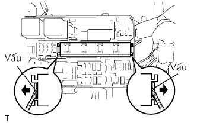
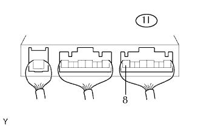

RƠ LE TỔ HỢP > KIỂM TRA TRÊN XE |
| 1. KIỂM TRA RƠ LE TỔ HỢP (RƠLE HORN) |
|  |
Dùng tô vít, nhả khớp 2 vấu và ngắt rơle tích hợp ra khỏi hộp đầu nối khoang động cơ.
|  |
Đo điện áp của rơle HORN.
| Nối dụng cụ đo | Điều kiện | Điều kiện tiêu chuẩn |
| 1I-8 - Mát thân xe | Công tắc còi ON | 10 đến 14 V |